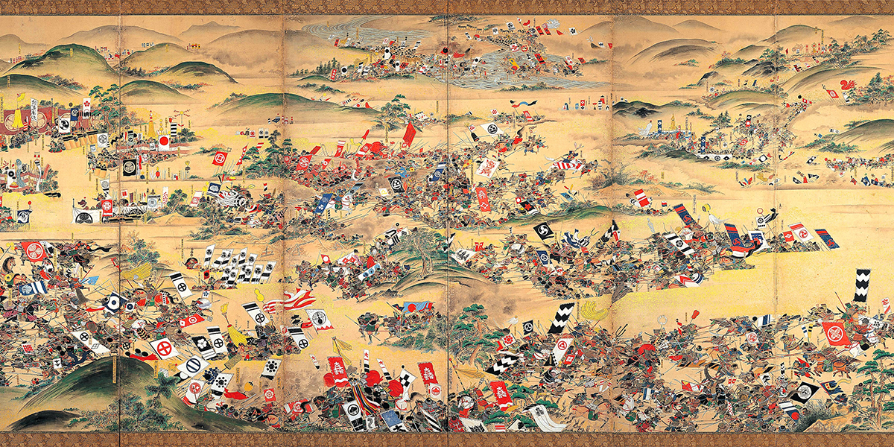

Classical Japan
Asuka period (538–710)
The Asuka period (飛鳥時代, Asuka jidai) was a period in the history of Japan lasting from 538 to 710 (or 592 to 645), although its beginning could be said to overlap with the preceding Kofun period. The Yamato polity evolved greatly during the Asuka period, which is named after the Asuka region, about 25 km (16 mi) south of the modern city of Nara. The Asuka period is characterized by its significant artistic, social, and political transformations, having their origins in the late Kofun period but largely affected by the arrival of Buddhism from China. The introduction of Buddhism marked a change in Japanese society. The Asuka period is also distinguished by the change in the name of the country from Wa (倭) to Nihon (日本).
Nara period (710–794)
The Nara period (奈良時代, Nara jidai) of the history of Japan covers the years from AD 710 to 794.[1] Empress Genmei established the capital of Heijō-kyō (present-day Nara). Except for a five-year period (740–745), when the capital was briefly moved again, it remained the capital of Japanese civilization until Emperor Kanmu established a new capital, Nagaoka-kyō, in 784, before moving to Heian-kyō, modern Kyoto, a decade later in 794. Japanese society during this period was predominately agricultural and centered on village life. Most of the villagers followed Shintoism, a religion based on the worship of natural and ancestral spirits named kami. The capital at Nara was modeled after Chang'an, the capital city of the Tang dynasty.[2] In many other ways, the Japanese upper classes patterned themselves after the Chinese, including adopting the Chinese writing system, Chinese fashion, and a Chinese version of Buddhism.
Heian period (794–1185)
The Heian period (平安時代, Heian jidai) is the last division of classical Japanese history, running from 794 to 1185.[1] The period is named after the capital city of Heian-kyō, or modern Kyoto. It is the period in Japanese history when Buddhism, Daoism and other Chinese influences were at their height. The Heian period is also considered the peak of the Japanese imperial court and noted for its art, especially poetry and literature. Although the Imperial House of Japan had power on the surface, the real power was in the hands of the Fujiwara clan, a powerful aristocratic family who had intermarried with the imperial family. Many emperors actually had mothers from the Fujiwara family.[2] Heian (平安) means "peace" in Japanese.
Feudal Japan
Kamakura period (1185–1333)
The Kamakura period (鎌倉時代, Kamakura jidai, 1185–1333) is a period of Japanese history that marks the governance by the Kamakura shogunate, officially established in 1192 in Kamakura by the first shōgun, Minamoto no Yoritomo. The period is known for the emergence of the samurai, the warrior caste, and for the establishment of feudalism in Japan. The Kamakura period ended in 1333 with the destruction of the shogunate and the short re-establishment of imperial rule under Emperor Go-Daigo by Ashikaga Takauji, Nitta Yoshisada, and Kusunoki Masashige.
Muromachi period (1333–1568)
The Muromachi period (室町時代, Muromachi jidai, also known as the Muromachi era, the Ashikaga era, or the Ashikaga period) is a division of Japanese history running from approximately 1336 to 1573. The period marks the governance of the Muromachi or Ashikaga shogunate (Muromachi bakufu or Ashikaga bakufu), which was officially established in 1338 by the first Muromachi shōgun, Ashikaga Takauji, two years after the brief Kenmu Restoration (1333–1336) of imperial rule was brought to a close. The period ended in 1573 when the 15th and last shogun of this line, Ashikaga Yoshiaki, was driven out of the capital in Kyoto by Oda Nobunaga. From a cultural perspective, the period can be divided into the Kitayama and Higashiyama periods (later 15th – early 16th centuries). The early years from 1336 to 1392 of the Muromachi period are known as the Nanboku-chō or Northern and Southern Court period. This period is marked by the continued resistance of the supporters of Emperor Go-Daigo, the emperor behind the Kenmu Restoration. The years from 1465 to the end of the Muromachi period are also known as the Sengoku period or Warring States period.
Azuchi–Momoyama period (1568–1600)
The Azuchi–Momoyama period (安土桃山時代, Azuchi–Momoyama jidai) is the final phase of the Sengoku period (戦国時代, Sengoku jidai) in Japanese history from 1568 to 1600. The Azuchi–Momoyama period began with Oda Nobunaga entering into Kyoto in 1568 to install Ashikaga Yoshiaki as the 15th and ultimately final shōgun of the Ashikaga Shogunate, which had collapsed after outbreak of the Ōnin War in 1467 and triggered the chaotic Sengoku period. Nobunaga overthrew Yoshiaki and dissolved the Ashikaga Shogunate in 1573, launching a war of conquest to politically unify Japan by force from his base in Azuchi. Nobunaga was forced to commit suicide in the Honnō-ji Incident in 1582, and his successor Toyotomi Hideyoshi completed his campaign of unification, closing the Sengoku period and enacting reforms to consolidate his rule. Hideyoshi launched the Japanese invasions of Korea in 1592, but the invasion's failure damaged his prestige, and his young son and successor Toyotomi Hideyori was challenged by Tokugawa Ieyasu after his death in 1598. The Azuchi–Momoyama period ended with Tokugawa victory at the Battle of Sekigahara in 1600 – unofficially establishing the Tokugawa Shogunate and beginning the Edo period.[1] The Azuchi–Momoyama period oversaw Japanese society and culture transitioning from the Middle Ages to the early modern period. The Azuchi–Momoyama period is named after Nobunaga's Azuchi Castle and Hideyoshi's Momoyama Castle, and is also known as Shokuhō period (織豊時代, Shokuhō jidai) in some Japanese texts, abridged from the surnames of the period's two leaders in the on-reading: Shoku (織) for Oda (織田) plus Hō (豊) for Toyotomi (豊臣).